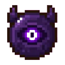
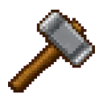
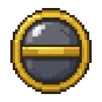

Mod para Necesse 1.3.3Mod for Necesse 1.3.3 · v4.2
Transforme o Necesse em um RPG de verdade Turn Necesse into a real RPG
Ganhe XP, suba até o nível 170 e distribua pontos em 34 classes de combate, defesa, mineração, pesca, vilas e necromancia. Tudo sem mudar a cara do jogo. Earn XP, climb to level 170 and spend points on 34 classes for combat, defense, mining, fishing, settlements and necromancy. All without changing the game's identity.
- Solo, mundos hospedados e servidoresSolo, hosted worlds and servers
- 12 idiomas12 languages
- Controle completoFull controller support
Na Steam WorkshopOn the Steam Workshop
Números da Steam Workshop em 30/10/2026 · 540 favoritos · em 558 coleções · 74 atualizações publicadas Steam Workshop numbers on Oct 30, 2026 · 540 favorites · in 558 collections · 74 published updates
Como funcionaHow it works
Jogue do seu jeito. Fique mais forte.Play your way. Get stronger.
Quase tudo que você faz no Necesse rende XP. Cada nível vale 1 ponto, e cada ponto vai para a classe que você quiser. Almost everything you do in Necesse gives XP. Each level is worth 1 point, and each point goes to the class you choose.
-
Ganhe XPEarn XP
Inimigos, chefes, mineração, plantação, colheita, pesca e o trabalho da sua vila. Áreas mais difíceis dão mais.Enemies, bosses, mining, farming, harvesting, fishing and your settlement's work. Harder areas give more.
-
Suba de nívelLevel up
São 170 níveis. Cada um pede 10.000 XP a mais que o anterior.There are 170 levels. Each one needs 10,000 XP more than the last.
-
Gaste o pontoSpend the point
Abra a janela com K (ou segure LB+RB) e coloque o ponto numa classe. Até 5 pontos por classe.Open the window with K (or hold LB+RB) and put the point into a class. Up to 5 points per class.
-
Destrave poderesUnlock powers
Cada nível de classe libera algo novo. Combine classes no máximo para sinergias como o Deus do Dano.Every class level unlocks something new. Max out classes together for synergies like Damage God.
34 classes, 5 caminhos34 classes, 5 paths
Combate total, vila total ou os doisFull combat, full settlement or both
As classes seguem as mesmas abas da janela do jogo. Dá para ligar e desligar cada uma na configuração. Classes follow the same tabs as the in-game window. Each one can be turned on or off in the config.
Muito além de atributosWay beyond stats
O que vem juntoWhat comes with it
NecromanciaNecromancy
Transforme monstros derrotados em lacaios permanentes que sobem até o nível 100, lutam com os próprios ataques e podem até ser um chefe.Turn defeated monsters into permanent minions that level up to 100, fight with their own attacks and can even be a boss.

Passivas e sinergiasPassives & synergies
Pesca AFK, minerador de veios, auto poção, imunidades e combos: Deus do Dano, Fusão Elemental e Tempestade Interior.AFK fishing, vein miner, auto potion, immunities and combos: Damage God, Elemental Fusion and Inner Storm.
Loja do RPG SkillsRPG Skills Shop
Bônus de XP 2x, 5x e 10x, stack de até 1000x, baús com até 400 slots, estações que alcançam baús mais longe, Minerador Explosivo e vilas maiores que o limite do jogo.2x, 5x and 10x XP buffs, stacks up to 1000x, chests with up to 400 slots, stations that reach farther chests, the Explosive Miner and settlements past the game's limit.
Qualidade de vidaQuality of life
Auto-Seleção de Arma, Sono Acelerado, comida que estraga 1 por vez, filtro nos baús e backup automático do inventário.Auto Weapon Select, Accelerated Sleep, food that spoils one at a time, chest filters and automatic inventory backups.

Do seu jeitoYour way
Painel RPG Skills Config no menu principal: nível máximo, curva de XP, multiplicadores, preços e classes. No servidor, vale a configuração do servidor.RPG Skills Config panel in the main menu: max level, XP curve, multipliers, prices and classes. On servers, the server's config wins.

Junto com o Safe Haven QOLWorks with Safe Haven QOL
Com os dois mods, o RPG Skills desliga só o que entregaria de graça o que as classes ensinam. O resto do Safe Haven continua funcionando.With both mods, RPG Skills only turns off what would give away for free what the classes teach. The rest of Safe Haven keeps working.
Antes de instalarBefore installing
Perguntas rápidasQuick questions
Coloque o RPG Skills na prioridade máxima, acima de todos os outros mods. Sem isso podem aparecer textos no idioma errado, conflitos e travamentos nas lojas dos colonos. Set RPG Skills to maximum priority, above every other mod. Otherwise you may get wrong-language text, conflicts and crashes in settler shops.
Funciona no multijogador?Does it work in multiplayer?
Sim: no solo, em mundos hospedados e em servidores dedicados. No servidor, as regras de XP, classes e preços vêm da configuração do servidor, sem mexer na sua.Yes: solo, hosted worlds and dedicated servers. On a server, XP, class and price rules come from the server's config without touching yours.
Perco meus pontos quando o mod atualiza?Do I lose my points when the mod updates?
Não. Desde a 4.0, atualizar o mod nunca zera classes, nível, XP ou compras da Loja.No. Since 4.0, updating the mod never resets classes, level, XP or Shop purchases.
Dá para desligar classes que eu não quero?Can I turn off classes I don't want?
Sim. Na aba Classes do RPG Skills Config, cada uma das 34 classes pode ser ligada ou desligada. O nível máximo e os pontos por classe também podem ser mudados.Yes. In the Classes tab of RPG Skills Config, each of the 34 classes can be turned on or off. Max level and points per class can be changed too.
Posso mudar meus pontos depois?Can I respec later?
Sim. Na aba Status há "Resetar pontos de classe" (custa moedas por nível) e "Zerar progressão". As melhorias da Loja do mundo não são afetadas.Yes. The Status tab has "Reset class points" (costs coins per level) and "Reset progression". World Shop upgrades are not affected.
Funciona com outros mods?Does it work with other mods?
Na maioria dos casos, sim, desde que o RPG Skills fique em prioridade máxima. A compatibilidade prioritária é com o Safe Haven QOL.In most cases, yes, as long as RPG Skills has maximum priority. Safe Haven QOL is the priority compatibility.
Ajuda e contatoHelp & contact
Achou um bug? Fale comigoFound a bug? Talk to me
Mande sua mensagem direto para o meu e-mail: bugs, sugestões ou dúvidas. Dá para anexar prints e logs, e eu respondo no e-mail que você informar. Send your message straight to my email: bugs, suggestions or questions. You can attach screenshots and logs, and I'll reply to the email you give me.
-
Relatar um bugReport a bug Conte o que aconteceu e como repetir.Tell what happened and how to repeat it.
-
Enviar arquivosSend files Até 3 anexos (prints, logs, zip), 10 MB no total.Up to 3 attachments (screenshots, logs, zip), 10 MB total.
-
Sugestões e dúvidasIdeas & questions Ideias para o mod são bem-vindas.Ideas for the mod are welcome.
-
Problemas comunsCommon issues Prioridade dos mods, itens perdidos, configuração e mais.Mod priority, lost items, config and more.
Evolua. Escolha sua classe. Domine o mundo.Evolve. Choose your class. Dominate the world.
Inscreva-se na Steam e o mod baixa sozinho na próxima vez que abrir o Necesse.Subscribe on Steam and the mod downloads by itself the next time you open Necesse.